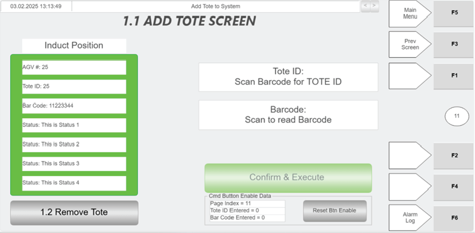

| Procedure ID | proc_remove_tote_via_hospital_hmi_shortcut_to_remove_tote_screen_v1 |
|---|---|
| Title | Remove Tote via Hospital HMI (shortcut to Remove Tote screen) |
| Procedure Type | operation |
| Primary Role | operator |
| Support Safe | Yes |
| Capability Tags | tote_lifecycle_state |
| Access Surface | hospital_hmi |
| Audience Roles | operator |
| Failure Pattern Tags | None |
| Validation Status | needs_sme_review |
| Merge Status | source_finalized |
Use the Hospital HMI Add Tote screen controls (green scanner, Tote ID and Barcode fields, and CONFIRM & EXECUTE) to send a tote back into the OptiSweep system from the induct side. Use the 1.2 Remove Tote button as a shortcut to the Remove Tote screen.
When a tote needs to be sent back into the OptiSweep system from the hospital station induct side using the Hospital HMI workflow.


Responsible role: operator
Instruction:
On the Hospital HMI, open the screen that contains the "1.2 Remove Tote" shortcut button (shown on the Hospital HMI Add Tote screen).
Expected result:
The Hospital HMI screen is displayed with a visible "1.2 Remove Tote" shortcut button.
Responsible role: operator
Instruction:
Press the "1.2 Remove Tote" button to navigate to the "Remove Tote" screen.
Expected result:
The Hospital HMI "Remove Tote" screen is displayed.
Responsible role: operator
Instruction:
On the Remove Tote screen, use the green scanner to scan the tote bar code to populate the "Tote ID" field.
Expected result:
The "Tote ID" field is populated after scanning with the green scanner.
Responsible role: operator
Instruction:
Press the "Barcode" control (press and then use the green scanner) and scan the tote bar code to populate the "Barcode" field.
Expected result:
"Barcode" field is populated after scanning.
Responsible role: operator
Instruction:
Verify the "Induct Position Information" panel shows WCS data for the induct side, including AGV#, Tote ID (induct side), Barcode, and that a "Status" message is present.
Expected result:
"Induct Position Information" panel displays AGV#, Tote ID (induct side), Barcode, and a "Status" message.
Stop or Escalate If:
Responsible role: operator
Instruction:
After the tote is positioned properly on the induct side and the Induct Position Information panel shows WCS data and Status, press "CONFIRM & EXECUTE" to send the tote back into the system.
Expected result:
The tote is sent back into the system via the induct side after pressing "CONFIRM & EXECUTE".
Stop or Escalate If: